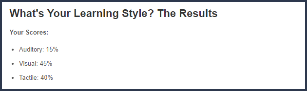

My
learning style
relies heavily on visual observation and kinetic interactions. In a group setting, this translates to a difficulty to maintain my engagement if there is no visual stimuli or hands-on experiences, which would require additional effort from whoever is speaking to me.
However, it also means that I will apply my visual tendencies to my means of communication, and provide demonstrations and examples/applications of my contention, resulting in stronger, more vivid presentations when I am communicating to an audience, or to my group members.
I would struggle to come up with the subject on which my presentation would revolve around, but my strengths in communication would make me a valuable speaker when that speed bump is behind me.
My
MBTI Test
states that I am an INFP, a result that I have consistently received throughout multiple takings of this test in the past half-decade. However, the extent to which I fulfill each trait of the INFP - Introverted, Intuitive, Feeling, and Prospecting, do not all necessarily lean particularly heavily to one side.
Perhaps on a different day, I might resemble an alternative personality type altogether, which would not be out of place with my constantly shifting and adapting personality, though one could argue that such flexibility only strengthens my position as a Mediator type.
Mind - 56% Introverted, 44% Extroverted
While I do have a slight preference to socialising with small groups or with a single person at a time, I do not tire easily from larger gatherings, and can enjoy larger companies
Energy - 58% Intuitive, 42% Observant
Although I am generally creative and imaginative, and can appreciate the challenge in digging through layers to form out-of-the-box interpretations, I am also still fairly grounded, and I try not to stray too far from what is before me
Nature - 58% Feeling, 42% Thinking
I am biased towards my heart over my brain, but I do not lose control of my emotions, or let them control me. Rather, I try to provide equal appreciation and consideration to both the emotional and logical aspects of an issue -
Tactics - 79% Prospecting, 21% Judging
My heavier leanings into a Prospecting type are reflected in my multi-tracked mind, and the overall fickleness in my work ethic. That is not to say I am unable to tunnel vision onto a single target; I have moments where I can maintain intense focus and dedication for a single task.
Identity - 93% Turbulent, 7% Assertive
I am often harshly critical of my own efforts, and struggle to take pride in my achievements. This lack of confidence has been a constant point of contention throughout my constant efforts to better myself over the years. On the bright side, it has encouraged me to take on a habit of closer introspection and general reflection, providing me with greater self awareness.
The typical traits associated with an INFP are idealism, passion, creativity, flexibility, and impracticality. A noted weakness is supposedly an inability or aversion to working with data, which I cannot say applies to me at all. I would say that MBTI has accurately captured only a portion of my personality, but does not depict the analytical, detail-oriented side of me that I value just as much as my idealistic, imaginative side.
My results from the
IPIP Big Five Personality Traits
mostly reflect the results of my MBTI 16 Personalities Test, the one notable conflicting trait being in the Extroversion sector. However, it is worth considering that this test displays the results as percentile rankings out of the results of the full population of partakers, whereas the 16 Personalities results display your leanings towards one side or the other.
As a result, I cannot say for sure whether or not this test has judged me inaccurately in comparison to MBTI, as it is entirely possible that I have scored a higher percentile as a result of more introverts taking this test, or that the human population as a whole is actually more introverted than I expected.
Emotional stability is this test’s version of Identity, and it reflects my MBTI result as a Turbulent type. My agreeableness and intellect/imagination is also reasonably high, which is concordant with the INFP’s flexibility and creativity/idealism. I believe my conscientiousness score percentile is highly accurate here, as I do find it a struggle to find motivation and dedicate myself even to tasks that I recognise to be important, resulting in heavy procrastination.
As an employee, this means that my strength lies in being able to accelerate my team towards our goal. While I may easily lose sight of the big picture and come up with impractical solutions or lack confidence and assertiveness when trying to provide a direction, I will pick up the pace quickly once the team gathers their bearings around the problem that we need to solve.
I am closer to the heart and hands of the team than its brain, as I will not only accelerate our actions, but also bring energy and raise morale. Additionally, my flexibility and creativity can become the glue of my group as I will have a natural tendency to find a suitable compromise for everyone in the case of a conflict. My general tendency to appease to my team also grants me a strength that I would not have in a solo-context, as my desire to maintain harmony to the group overrides my fickle work ethic and tendency to procrastinate.
This means that in a group dynamic, I am at my weakest as a leader or director, though that does not mean I am most effective as a minor pawn; I excel in a position where I have established authority and gained the respect of my group’s members, as that is where my aforementioned traits can shine the brightest, while foregoing the scenarios that expose my lack of assertiveness and impracticality. Overall, contrary to my leanings to introversion, I work more effectively as an individual in a group than alone.